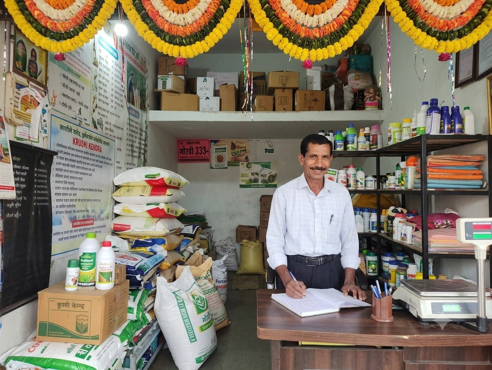
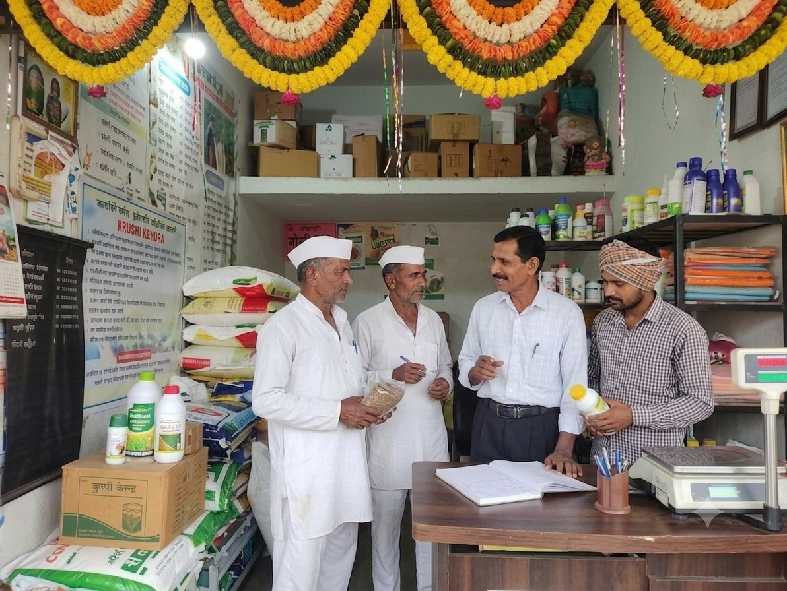

A Store Made
for Farmers.
Quality agricultural products and practical support for your everyday farming needs.
OUR STORY
A Krushi Kendra You Can Rely On
At Bele Krushi Kendra, we understand that farming needs more than just products. Farmers need the right seeds, fertilizers and crop-care products at the right time.
We keep a range of products that farmers commonly need during the farming season. If you are unsure about a product, you can talk to us about your crop and requirement, and we will help you find a suitable option.
For us, it is not just about selling a product. We want farmers to feel comfortable coming to us whenever they need help with their farming needs.

WHAT WE OFFER
Products for Your Farming Needs
From seeds to crop protection, we keep commonly needed agricultural products in one place.
Seeds
Seeds for different crops and farming requirements.
Fertilizers
Fertilizers and nutrients for healthy crop growth.
Crop Protection
Products for common pest, disease and weed problems.
Farming Supplies
Sprayers, drip irrigation and other useful farming supplies.

HOW WE HELP
Not Sure What You Need? Talk to Us.
Every crop is different. If you are confused about which product to choose, tell us about your crop and what problem you are facing.
- Which crop you are growing
- What problem you are facing
- What stage your crop is in
- What product you are looking for
We will help you understand the available options and choose a suitable product.
Need Something for Your Farm?
Visit our store or give us a call. We will be happy to help.
Contact Us →